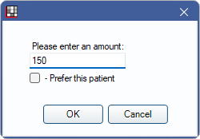
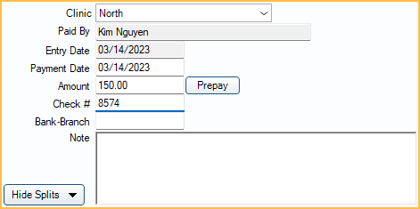
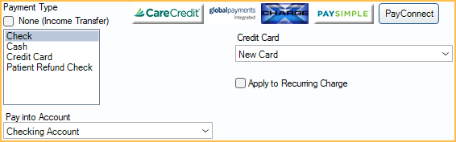
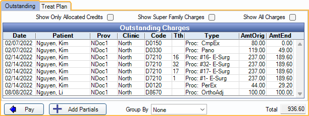
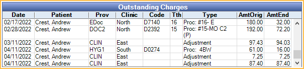

Payment
Use the Payment window to make patient payments or refunds, or view payment split information.
In the Account Module, click Payment.

Enter a patient payment or process a Patient Refund. By default, payments are automatically allocated via Payment Splits (paysplits) to the oldest adjustments, pay plan charges, and procedures with a remaining balance. If the production charges are paid in full, expected to be paid in full, or the patient has a credit balance, payments are allocated to unearned income (e.g., prepayment). To change payment allocation settings, see Allocations Setup.
 See our video: Entering Patient Payments Webinar
See our video: Entering Patient Payments Webinar
Creating a Payment
Selected Charges Method (Recommended)To apply a payment to specific charges:
- Highlight the charges (adjustments, pay plan debits, procedures) from the patient account grid.
- Click Payment. 
- Enter the payment amount.
- Click OK to open the payment window and enter the payment details. Note: When charges are selected, the payment amount is split between the charges by their remaining patient portion due.
- Any charges with no balance due are skipped, and the payment is automatically split to the next oldest outstanding charge.
- If a selected charge was previously overpaid, the overpaid amount is deducted from the charge and re-allocated to another charge within the current payment.
- Click OK to finalize the payment.
To create a payment without selecting procedures:
- Without any charges selected in the patient account grid, click Payment.
- Enter the payment amount.
- Check Prefer this patient to apply the payment to the patient's oldest outstanding charges. Or, leave unchecked to apply the payment to the oldest outstanding charges for the entire family.
- If the Paysplits setting in Allocations Setup is set to Rigorous or Auto-Split, Open Dental automatically creates payments splits for outstanding charges. If set to Manual, paysplits are made for the patient only.
- Enter payment details.
- Click OK to finalize payment.
To apply payment to charges in the Outstanding Charges or Treat Plan grid:
- Click Payment.
- Enter payment amount.
- Click Delete All to delete automatically generated paysplits.
- Select charges from the Outstanding or Treat Plan tab.
- Treat Plan tab is only available if Allow prepayments to allocate to treatment planned procedures is enabled in Allocations Setup.
- Click Pay.
- Repeat as necessary until all charges are added to the payment.
- Click OK to finalize payment
Payment Details
- Clinic: The default clinic is determined by Default Clinic for patient payments in Preferences. Click the dropdown to select a different clinic. Clinic specified determines which payment processor credentials are used for merchant services if defined per Clinic. If using Deposits, this is the clinic the payment is associated with.
- Paid By: The name of the patient making the payment. When a payment is split to multiple family members, the payment description shows the paid by name.
- Entry Date: The date the payment is entered. This is system-generated based on when the payment was created and cannot be changed.
- Surcharge Fee: Only displays for CareCredit and applicable PayConnect 2.0 transactions. Surcharge fee amount or merchant fee. Does not affect patient account balance. This is a database field that can be used for reporting.
- Payment Date: The date the payment is received. Used on Deposit Slips.
- Amount: The payment amount. This amount must match the total Current Payment Splits Amount (see below).
- Prepay: Click to delete existing paysplits and replace with a single paysplit using the Default unearned type for unallocated paysplits set in Preferences. The payment window closes immediately after clicking this button. For additional information, see Unearned / Prepayment.
- Check #: Optional, but recommended. Enter the check number associated with the payment. This can help distinguish one check payment from another on reports.
- Bank-Branch: Optional. Enter the Bank-Branch associated with the check. This can help differentiate check payments with the same check number or same payment amount.
- Note: A note is automatically added after processing a credit card payment, with the Credit Card Transaction Details. Optionally, add a note that appears in the patient's account as the payment description in addition to the Payment Type. Notes show on statements when the Show notes for payments preference is enabled.
- Hide Splits/Show Splits: Click to toggle between payment split views. The default view is determined by the Allocations Setup setting, Hide paysplits from payment window by default. See Current Payment Splits and Outstanding Charges and Treatment Planned Procedures sections below for more information.
Payment Type and Credit Card Details
- Payment Type: The type of payment. Customize options in Definitions: Payment Types. If the preference Payments prompt for Payment Type is disabled, a Payment Type is selected by default and can be changed. If the preference is enabled, the user must select a Payment Type manually.
- None (Income Transfer): Check to mark the payment as an Income Transfer. When checked, the Pay button changes to Transfer and the Outstanding Charges grid groups by patient, clinic, and provider. This option is disabled when editing existing payments that are attached to a deposit or are not $0.
- Pay Into Account: If using the Accounting feature, and Auto Payment Entries are set up for the selected Payment Type, use the dropdown to select an asset account to debit or credit the payment to. Set available accounts in Accounting Setup.
- Credit Card: Process a Credit Card Payment.
- Apply to Recurring Charge: Check to apply this payment to scheduled CC Recurring Charges. The user is prompted to select a date to apply the recurring charge. The patient is removed from the Recurring Charges List for the date the payment was applied.
Current Payment Splits
This area lists this payment's current Payment Splits (paysplits) allocated to providers, clinics, patient, procedure, adjustments, pay plan charges, etc. It also lists unallocated paysplits (Unearned / Prepayment). Double-click a row to Revise a Paysplit.

Use the Filtering Current Payment Splits options to highlight specific paysplits in the Current Payment Splits grid that meet filtering criteria.
- Patients: Select one or more specific patients attached to the payment to filter paysplits. Only patients with paysplits attached to the current payment are available in the dropdown.
- Providers: Select one or more specific providers attached to the payment to filter paysplits. Only providers attached to production items or with outstanding or treat plan charges in the family are available in the dropdown.
- Clinics: Select on or more specific Clinics attached to the payment to filter paysplits. Only Clinics with paysplits attached to the current payment are available in the dropdown.
- Amt Min: Enter a value to filter the paysplits with a value greater than or equal to this amount.
- Amt Max: Enter a value to filter the paysplits with a value less than or equal to this amount.
Click Refresh to update filter criteria. Paysplits matching the criteria are highlighted in the grid.

- Delete Splits: Delete the selected paysplits from the grid. The total amount of the deleted split is added back to the Amt End under Outstanding Charges for future splits.
- Delete All: Delete all the paysplits in the grid. All paysplit amounts are added back to the Amt End under Outstanding Charges for future splits.
- Add Split: Manually add a paysplit.
- Total: The sum of all current payment splits. The Total must match the total payment Amount in order to save the payment.
- If a payment is split to multiple providers, only the provider most recently added to the Providers list is shown in the Patient Account Grid. Double-click an existing payment to see a breakdown of all providers attached to a payment.
- Payments split to multiple patients (e.g., family members) display text noting the first name of the Paid By account (i.e., where the payment was created) and (split) if the payment is split to multiple patients (e.g., Paid by Oliver (split)). Payment line items only display for accounts that have Payment Splits, regardless of the Paid By account.
Outstanding Charges and Treatment Planned Procedures
To change what shows in the Outstanding Charges or Treatment Planned Procedures grid (see below), use the Filtering options.

- Patients: Select one or more family members with outstanding or treatment planned charges from the dropdown.
- Providers: Select one or more specific providers. Only providers attached to production items or with outstanding or treat plan charges in the family are available in the dropdown.
- Type: Select one or more specific charge types (e.g., adjustments, procedures, or pay plan charges).
- Clinics: Select one or more Clinics from the dropdown.
- Amt End Min: Enter a value to limit the charges with a minimum remaining balance greater than or equal to this amount.
- Amt End Max: Enter a value to limit the charges with a maximum remaining balance less than or equal to this amount.
- From/To Dates: Enter a value or use the calendar dropdown to select a date range. Only procedures completed or treatment planned/scheduled in this date range are shown.
- Proc Codes: Narrow the charges by procedure code(s). This field is case sensitive. To enter more than one code, separate each code with a comma (e.g., D0210,D1110).
- Show Only Allocated Credits (Outstanding tab only): Only show production items with a remaining balance after their attached adjustments and payments have been applied. This may be useful if an outstanding charge is not listed because it has been indirectly paid off by unallocated credits.
- Show Super Family Charges (Outstanding tab only): Show or hide charges for every patient in the Super Family. Only appears when the selected patient is in a Super Family.
- Show All Charges (Outstanding tab only): By default, only unpaid adjustments, pay plan charges, and procedures in the family show. Check this box to also show paid charges.
- Click Refresh to update items in the grid after setting filter options.
By default, the Outstanding tab is selected and the grid lists outstanding charges matching the filter criteria. Users can select completed charges or treatment planned procedures to create paysplits.
Outstanding Tab: Lists all adjustments, pay plan charges, and completed procedures that meet the filter criteria.
- Amt Orig: Amount owed on a charge prior to any payments, adjustments, or insurance estimates.
- Amt End: Amount owed on a charge after all payments, adjustments, and insurance estimates including the current payment.
- Total: The total amount of all the selected outstanding charges.
Treat Plan Tab: Lists all treatment planned procedures that meet the filter criteria. To show this tab, Allow prepayments to allocate to treatment planned procedures must be enabled in Allocations Setup.
- Amt Orig: Amount owed on a charge prior to any payments, adjustments, or insurance estimates.
- Amt End: Amount owed on a charge after all payments, adjustments, and insurance estimates including the current payment.
- Total: The total amount of all the selected treatment planned procedures.
Pay: Click to create paysplits for the selected outstanding charges or treatment planned procedures.
Transfer: When None (Income Transfer) is the Payment Type, the Pay button changes to Transfer. Useful for Income Transfers.
Add Partials: Click to create a paysplit for only part of an outstanding charge. Users are prompted to enter the partial paysplit amount upon clicking this button.
Group By: Change the grouping of items in the grid.
- None (default): Show all charges for all patients in the family, sorted first by date (oldest charge at the top), then by procedure code.

- Provider: Combine each family member's outstanding charges into one row per provider. When grouping by provider, the Type and Clinics filters are disabled.

- Clinic and Provider: Combine each family member's charges into one row per provider and clinic. When grouping by clinic, the Type filter is disabled.

Save Payment, Receipts, and More
- Print Receipt: Reprint XCharge or PayConnect receipts. This button only shows if a receipt already exists for the transaction.
- Email Receipt: Generate a PDF copy of the XCharge or PayConnect receipt and email it to the patient. A copy of the receipt is saved in the patient's Imaging Module.
- Delete: Delete the entire payment. Only enabled on existing payments.
- OK: Post the payment to the patient account or save changes.
- Cancel: The behavior of the cancel button varies depending on the point the user is in the payment process.
- New payment no credit card transaction: If this is a new payment and no credit card has been processed, cancel deletes the payment.
- New payment with a credit card transaction: If this is a new payment and the user just processed a credit card, cancel voids the credit card transaction, posts the payment, and posts a separate voided payment.
- Editing an existing payment: Cancels any changes made in the payment window.